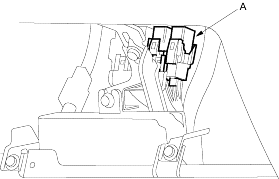
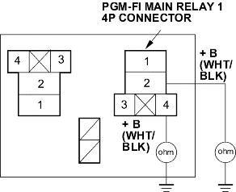

- Inspect the No. 20 IG1 (40A) fuse in the under-hood fuse/relay box.
Is the fuse OK?
YES - Repair open in the wire between the No. 20 IG (40A) fuse and the gauge assembly. If the wires are OK, test the ignition switch, refer to the '01 Civic Shop Manual on this CD (see page 22-83).
NO - Repair short in the wire between No. 20 IG (40A) fuse and the under-dash fuse/relay box. Also replace the No. 20 IG (40A) fuse. 
- Try to start the engine.
Does the engine start?
YES - Go to step 14.
NO - Go to step 17.
- Turn the ignition switch OFF.
- Connect ECM/PCM connector terminal E31 and body ground with a jumper wire.
ECM/PCM CONNECTOR E (31P)

Wire side of female terminals
- Turn the ignition switch ON (II).
Is the MIL on?
YES - Substitute a known-good ECM/PCM and recheck, refer to the '01 Civic Shop Manual on this CD (see page 11-313). If symptom/indication goes away, replace the original ECM/PCM.
NO - Check for an open in the wire between the ECM/PCM (E31) and the gauge assembly. Also check for a blown MIL bulb. If the wires and the bulb are OK, replace the gauge assembly.
- Turn the ignition switch OFF.
- Inspect the No. 6 ECU (ECM/PCM) (15A) fuse in the under-hood fuse/relay box.
Is the fuse OK?
YES - Go to step 25.
NO - Go to step 19.
- Remove the blown No. 6 ECU (ECM/PCM) (15A) fuse in the under-dash fuse/relay box.
- Remove PGM-FI main relay 1 (A).

- Check for continuity between body ground and the PGM-FI main relay 14P connector terminals No. 2 and No. 4 individually.

Wire side of female terminals
Is there continuity?
YES - Repair short in the wire between the No. 6 ECU (ECM/PCM) (15A) fuse and the PGM-FI main relay 1. Also replace the No. 6 ECU (ECM/PCM) (15A) fuse.
NO - Go to step 22.